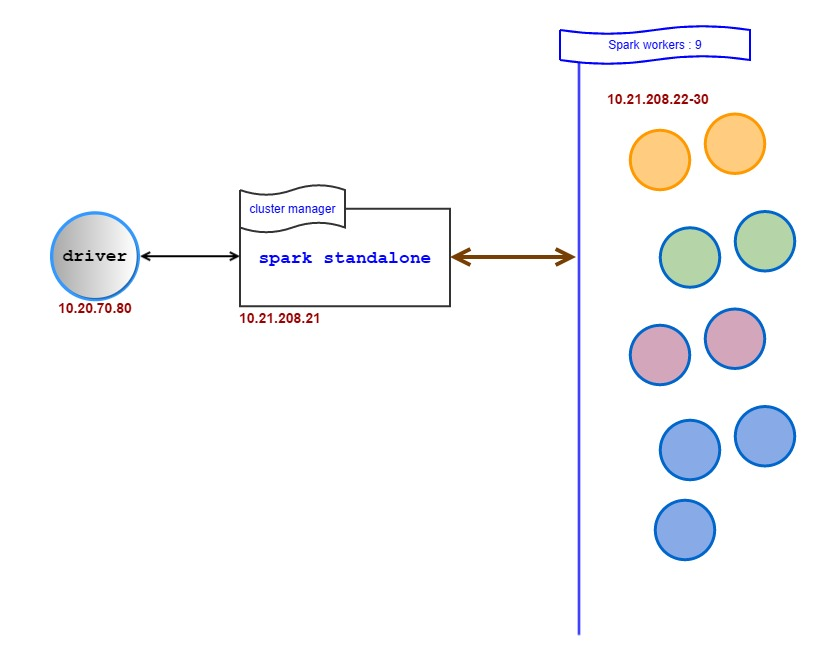
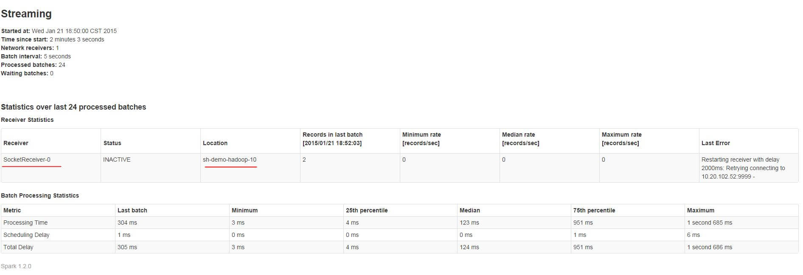

［touch spark］6. 终于等到你，spark streaming + 新浪微博数据
2015-01-05
注：与本文相关的所有源代码已放在最最喜爱的 Github 上。
1. 写在前面
从最开始想尝试streaming的时候，我一心想实现databricks在spark summit 2014上的那个演示---实时获取twiiter数据，并做分析展示。无奈，在折腾twitter几天后只得放弃。刚开始注册twitter得需要手机号，可是twitter居然不支持中国内地的号码，这里不知道是twitter不支持，还是中国内地的运营商不支持twitter，我想应该是后者吧。当时纠结了好久，一种心碎的感觉。后来终于突然有一天无需手机号也能注册了，我欣喜若狂地注册了一个twitter号，后来发现尼玛新建一个twitter app需要手机验证，这下我就完全down机了，无奈，twitter这条路是完全走不通了。这段时间的心情，就像过山车一样，从心碎到兴奋再到最后的心死。
 可是我不死心啊，还行想玩玩streaming，想体验体验streaming的power，怎么办怎么办？我左思右想，想要做到databricks的效果，唯一的办法就是利用咱们天朝的新浪微博了。在调研了一下新浪微博的API后，其原理和twitter API的原理也是一样的，但是新浪微博的streaming API被取消了。好吧，硬骨头挺多，还得自己啃了。没办法，我想了想，就2个选择，要么不做，然后天天后悔；要么做，然后天天折腾。好吧，我承认我还是义无返顾地选择了第二条路，sigh。
可是我不死心啊，还行想玩玩streaming，想体验体验streaming的power，怎么办怎么办？我左思右想，想要做到databricks的效果，唯一的办法就是利用咱们天朝的新浪微博了。在调研了一下新浪微博的API后，其原理和twitter API的原理也是一样的，但是新浪微博的streaming API被取消了。好吧，硬骨头挺多，还得自己啃了。没办法，我想了想，就2个选择，要么不做，然后天天后悔；要么做，然后天天折腾。好吧，我承认我还是义无返顾地选择了第二条路，sigh。
在写这篇博客的时候看到徐静蕾的新片《有一个地方只有我们知道》，里面一句话让我深有感触---没有在一起的，就是不对的人，对的人，你是不会失去他的，我也想说，没有学到的技术，就是你不喜爱的技术，喜欢的技术，你是不可能学不会的。
2. 实验目的
这次实验是想尝试一下spark streaming的效果，预期是这样的：通过每隔 几秒 从新浪微博拿到 一些 公开的微博数据，然后实时 处理 一下这些数据并 展现 出来。
ok，这里的关键上面已经用粗体标记出来了。有两个方面，一是时间间隔的设置，数据流量的设置，这关系到streaming的稳定性，比如说若处理速度小于数据流入的速度的话，那数据会慢慢堆积起来；若数据流入速度小于处理速度的话，展现处理结果肯定也不好看。这里是属于tuning的环境，可以在spark官网上仔细瞧瞧，不过具体还是要根据应用需求来定。第二个方面是数据处理和展示，这应该是应用的核心了。这里我们做得很初级，简单做一些TF-IDF的测试或者是更简单的包含性测试。
既然是第一次，那就不要太那啥，还是温柔一点比较好。暂时定一个目标，我们想看看实时微博中哪些是包含某某字段的，然后输出这些微博的信息。比如说，我想知道实时微博中，哪些是包含 建设银行，涨 这样两个关键字的微博，并实时打印出来。
3. streaming，我的目标
既然要玩，那就玩得痛快点，下面是我准备在微博streaming这块做的一些各个版本的安排：
- 数据方面：
- 第一步，能够获取微博伪实时数据即可【微博API请求有限制】；
- 第二步，自己设计一个搜集系统，能获取近实时的微博数据，希望能媲美原来微博的streaming API；
- 应用方面：
- 第一步，啥都不干，确认spark cluster能连到我的数据源，把所有接收到的数据简单打印出来；
- 第二步，简单处理，对实时数据流进行一个简单的filter操作，比如说，看看哪些消息是提到了某人，或某支股票；
- 第三步，复杂一点，用用MLib来对每条消息学习一下，其实就是高级的filter；
目前我打算从上面几个小目标一点一点上，最近发现一个NB项目，Zeppelin，底层可以集成spark，届时看看是否有需要，可以尝试下
eppelin+spark。【最近我尝试编译过Zeppelin，遇到很多问题，目前这个项目还不是很成熟，不过项目组说了，他们正在迁移到Apache的孵化器中，完成迁移后会专心发布新版本。Good，看来的确是一个NB项目】
冲啊，每天进步一点点。

4. 步骤规划
我们第一次的目标很简单，我准备在数据方面，简单地完成第一步；在应用方面，也是简单地完成第一步，算是一个最小的MVP了，暂定为MVP 0.1.0 吧，哈哈。好，现在简单地分析下，大概有下面几个步骤：
- 获取数据，通过新浪微博API，这里需要我们设计一个数据收集器
- 发送/接收数据，因为我改用Python来玩spark了，目前spark 1.2版的python streaming只支持socket包，当然socket包也是最简单的了，所以我准备用socket方式进行数据的收发。So，这里我们需要写一个简单的Socket Server
- 展示数据，简单的打印下来即可
下面，我们就按照MVP 0.1.0 的步骤规划，一步一步来搞定咱们这个小系统。
5. 获取数据：新浪微博API使用
微博官方已经有详细的新手引导了，这里就不重复造轮子了，大家可以直接参考 这里。我用的是Python SDK
6. 收发数据：Socket Server
好久没有接触网络编程这块了，这里为了快速完成MVP的效果，我用了最简单的多线程socket server模型，即新建一个线程用于处理一个新的连接。整个socket server的模型如下：

socket server的核心代码如下，完整代码请查看github。这里send_data应该是到去拿新浪微博的数据的，但是我在测试的时候为了方便起见，先简单地用了一条测试数据： data = 'hello, I am litaotao'。
def send_data(conn, client):
# data = get_data(client)
data = 'hello, I am litaotao'
conn.sendall(data.encode('utf-8'))
print '\nIN THREAD: send to {}, data length: {}'.format(str(conn), str(len(data)))
conn.close()
def socket_server(HOST, PORT):
client = get_local_weibo_client() or get_weibo_client()
# s = socket.socket(socket.AF_INET,socket.SOCK_STREAM)
s = socket.socket()
s.bind((HOST, PORT))
s.listen(10)
while True:
print 'wait for connection ...'
conn, addr = s.accept()
print 'connect with {} : {}'.format(addr[0], str(addr[1]))
thread.start_new_thread(send_data, (conn, client))
s.shutdown()
if __name__ == '__main__':
HOST, PORT = '', 9999
socket_server(HOST, PORT)
7. 展示数据: Just print
现在socket server已经准备就绪了，接下来准备一下spark端的任务逻辑。在这之前，我先简单介绍一下目前我的spark集群环境，为了方便理解，我也把环境的IP地址列出来了，这样在以后启动命令的时候也比较清楚。
可以清楚的看到，目前spark cluster测试环境里一共有10台机器，其中一台10.21.208.21作为cluster manager，即master使用，其他9台作为worker使用。而我们写spark任务程序以及提交任务，拿到任务运行结果，都在一台driver机器上，driver机器ip是10.20.70.80。

ok，现在可以来写spark的任务程序了，很简单，就是一个print语句，我是用python写的，代码如下：
# -*- coding: utf-8 -*-
import sys
from pyspark import SparkContext
from pyspark.streaming import StreamingContext
def change_nothing(lines):
return lines
if __name__ == "__main__":
if len(sys.argv) != 3:
print >> sys.stderr, "Usage: weibo_message.py <hostname> <port>"
exit(-1)
sc = SparkContext(appName="PythonStreamingWeiboMessage")
ssc = StreamingContext(sc, 5)
lines = ssc.socketTextStream(sys.argv[1], int(sys.argv[2]))
lines = change_nothing(lines)
lines.pprint()
ssc.start()
ssc.awaitTermination()
8. Opps, 为神马只有一个worker接收到数据了
原本以为这样就大功告成，可是当我兴奋地运行程序的时候，突然发现一个极为严重的问题---只有一个worker会到socket server这里来获取数据，并处理后返回给driver，而且有时候是第一台worker来拿数据，有时候却又是另外一台worker来拿数据，anyway，问题就是：9太worker中，一直只有1台worker来拿数据，处理并返回，且这台worker并不是固定的。
下面是日志：
- socket server的运行日志
C:\Users\taotao.li\Desktop\weibostreaming (master)
λ python socket_server_1.py
wait for connection ...
-----------------------
connect with 10.21.208.30 : 48927
wait for connection ...
-----------------------
IN THREAD: send to <socket._socketobject object at 0x0000000002C45E18>, data length: 20
connect with 10.21.208.30 : 48929
wait for connection ...
-----------------------
IN THREAD: send to <socket._socketobject object at 0x0000000002C45E80>, data length: 20
connect with 10.21.208.30 : 48931
wait for connection ...
-----------------------
IN THREAD: send to <socket._socketobject object at 0x0000000002C45E18>, data length: 20
connect with 10.21.208.30 : 48933
wait for connection ...
-----------------------
IN THREAD: send to <socket._socketobject object at 0x0000000002C45E80>, data length: 20
connect with 10.21.208.30 : 48935
wait for connection ...
IN THREAD: send to <socket._socketobject object at 0x0000000002C45E18>, data length: 20
-----------------------
connect with 10.21.208.30 : 48937
wait for connection ...
IN THREAD: send to <socket._socketobject object at 0x0000000002C45E80>, data length: 20
-----------------------
connect with 10.21.208.30 : 48938
wait for connection ...
-----------------------
IN THREAD: send to <socket._socketobject object at 0x0000000002C45E18>, data length: 20
connect with 10.21.208.30 : 48940
wait for connection ...
IN THREAD: send to <socket._socketobject object at 0x0000000002C45E80>, data length: 20
-----------------------
connect with 10.21.208.30 : 48942
wait for connection ...
IN THREAD: send to <socket._socketobject object at 0x0000000002C45E18>, data length: 20
-----------------------
connect with 10.21.208.30 : 48944
wait for connection ...
-----------------------
IN THREAD: send to <socket._socketobject object at 0x0000000002C45E80>, data length: 20
connect with 10.21.208.30 : 48946
wait for connection ...
-----------------------
IN THREAD: send to <socket._socketobject object at 0x0000000002C45E18>, data length: 20
connect with 10.21.208.30 : 48948
wait for connection ...
-----------------------
IN THREAD: send to <socket._socketobject object at 0x0000000002C45E80>, data length: 20
connect with 10.21.208.30 : 48952
wait for connection ...
IN THREAD: send to <socket._socketobject object at 0x0000000002C45E18>, data length: 20
-----------------------
connect with 10.21.208.30 : 48953
wait for connection ...
IN THREAD: send to <socket._socketobject object at 0x0000000002C45E80>, data length: 20
-----------------------
connect with 10.21.208.30 : 48955
wait for connection ...
IN THREAD: send to <socket._socketobject object at 0x0000000002C45E18>, data length: 20
-----------------------
connect with 10.21.208.30 : 48956
wait for connection ...
IN THREAD: send to <socket._socketobject object at 0x0000000002C45E80>, data length: 20
-----------------------
connect with 10.21.208.30 : 48957
wait for connection ...
-----------------------
IN THREAD: send to <socket._socketobject object at 0x0000000002C45E18>, data length: 20
-----------------------
Traceback (most recent call last):
File "socket_server_1.py", line 24, in <module>
socket_server(HOST, PORT)
File "socket_server_1.py", line 16, in socket_server
conn, addr = s.accept()
File "C:\Anaconda\lib\socket.py", line 202, in accept
sock, addr = self._sock.accept()
KeyboardInterrupt
- spark 任务的启动命令，我把处理返回的结果重定向到log.txt里，方便查看
root@ubuntu2[17:41:01]:~/Desktop/streaming#spark-submit --master spark://10.21.208.21:7077 weibo_message.py 10.20.102.52 9999 > log.txt
spark 任务运行日志，太多了，完整的日志可以到 这里下载 spark-console.log
spark 任务运行结果日志 log.txt，完整的日志可以到 这里下载 log.txt
-------------------------------------------
Time: 2015-01-21 18:50:05
-------------------------------------------
-------------------------------------------
Time: 2015-01-21 18:50:10
-------------------------------------------
hello, I am litaotao
-------------------------------------------
Time: 2015-01-21 18:50:15
-------------------------------------------
hello, I am litaotao
-------------------------------------------
Time: 2015-01-21 18:50:20
-------------------------------------------
hello, I am litaotao
hello, I am litaotao
-------------------------------------------
Time: 2015-01-21 18:50:25
-------------------------------------------
-------------------------------------------
Time: 2015-01-21 18:50:30
-------------------------------------------
-------------------------------------------
Time: 2015-01-21 18:50:35
-------------------------------------------
-------------------------------------------
Time: 2015-01-21 18:50:40
-------------------------------------------
-------------------------------------------
Time: 2015-01-21 18:50:45
-------------------------------------------
-------------------------------------------
Time: 2015-01-21 18:50:50
-------------------------------------------
-------------------------------------------
Time: 2015-01-21 18:50:55
-------------------------------------------
-------------------------------------------
Time: 2015-01-21 18:51:00
-------------------------------------------
hello, I am litaotao
-------------------------------------------
Time: 2015-01-21 18:51:05
-------------------------------------------
hello, I am litaotao
-------------------------------------------
Time: 2015-01-21 18:51:10
-------------------------------------------
-------------------------------------------
Time: 2015-01-21 18:51:15
-------------------------------------------
-------------------------------------------
Time: 2015-01-21 18:51:20
-------------------------------------------
-------------------------------------------
Time: 2015-01-21 18:51:25
-------------------------------------------
-------------------------------------------
Time: 2015-01-21 18:51:30
-------------------------------------------
hello, I am litaotao
hello, I am litaotao
-------------------------------------------
Time: 2015-01-21 18:51:35
-------------------------------------------
hello, I am litaotao
hello, I am litaotao
- Web UI 监控截图，显示只有一个receiver 
9. Why! What happened?
百思不得其解，这是为什么呢，这里我有两个疑点：
- 难道我对这个任务的理解有误吗。我的理解是，当运行spark-submit提交任务后，master应该会把这个weibo_message代码分发到9个worker上，然后9个worker分别在自己的机器上新建TCP连接到socket server，并从这个socket server上获取数据，然后处理后各自独立返回给driver。难道是我理解错误了吗。
- 我仔细研读了官方spark streaming的教程，在里面发现这样一个主题 Level of Parallelism in Data Receiving，似乎对比起上图的Web UI监控图来看，难道是要自己根据worker的数据自定义receiver的数量。即目前我有9太worker，那我必须手动定义9个receiver？难道真的应该是这样的吗，我怎么觉得这样设计会很不灵活呢？why？
扫一扫